Screenshots
Showcase
Taken in game, on NeoForge and Fabric, with no shaders or texture packs.

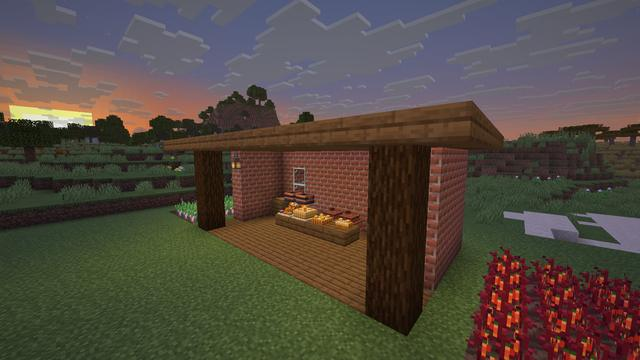
A kitchen at sunset: pots over campfires, Brick Ovens, a feast table
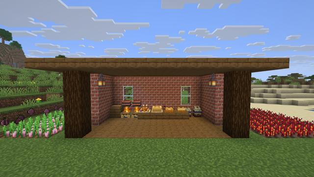
Board, pots, ovens, crocks and a feast table, with onions and Ember Peppers outside
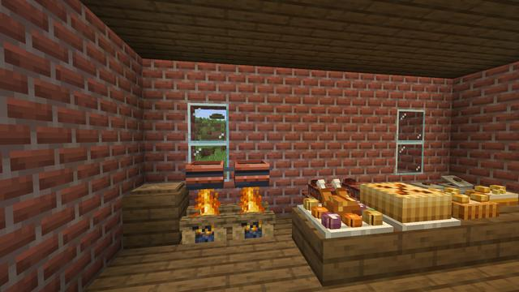
Cooking Pots over campfires, the Cutting Board, the feast table
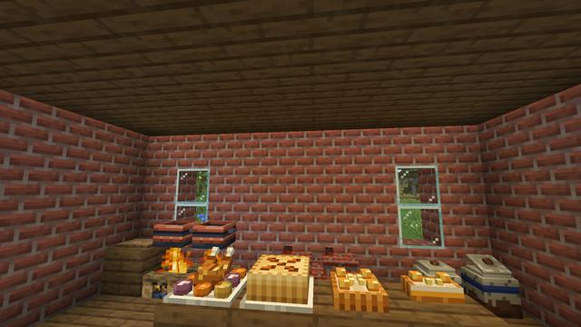
Roast Banquet, Harvest Pie and Glow Berry Tarts, ready to serve
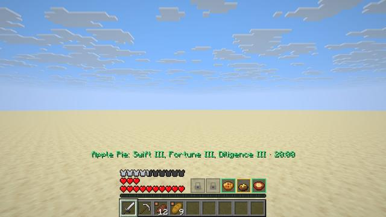
Three meals in the row where the food bar was, and the extra hearts they give A Gourmet dish with Shift held: benefits, score and the whole recipe chain
A Gourmet dish with Shift held: benefits, score and the whole recipe chain
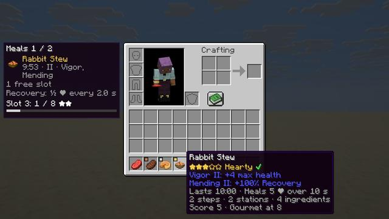
Vanilla food is rated too: rabbit stew is Hearty
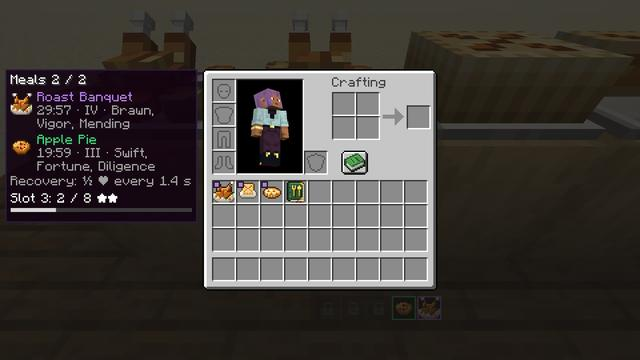
Your meals and the next slot, beside the inventory
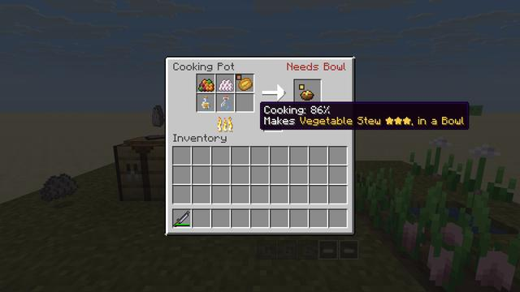
The Cooking Pot shows what it will make
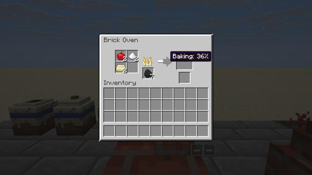
The Brick Oven, baking
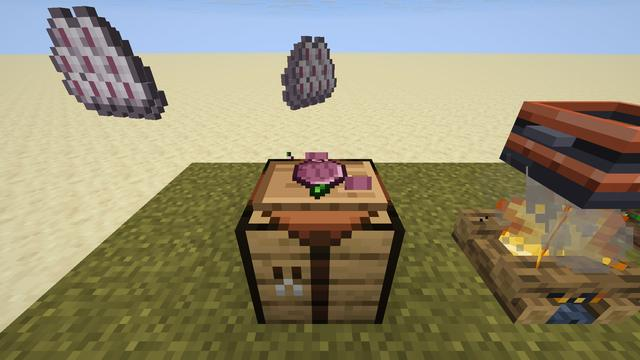
Cutting on the board
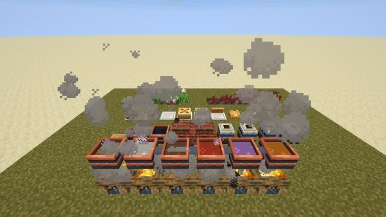
Each soup in its own colour
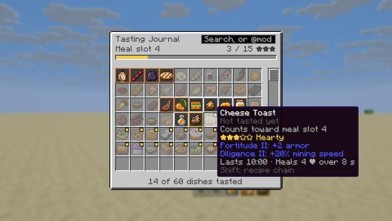
The Tasting Journal marks the dishes that count toward the next slot
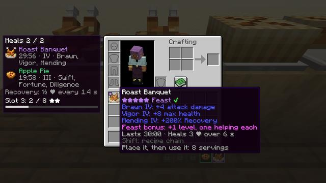
A feast: five stars and one helping each
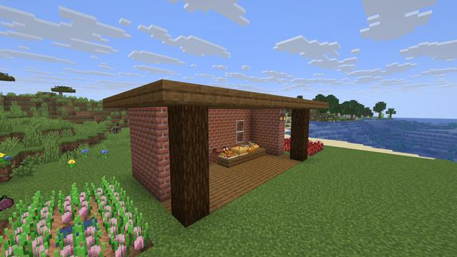
Onions on farmland beside the kitchen
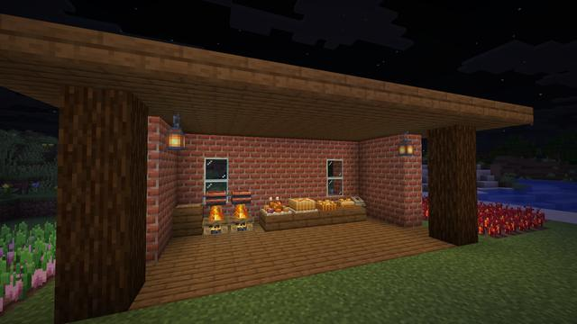
Lit ovens and lanterns after dark